7 Examples
7.1 One Continuous Variable At A Time
7.1.1 Dotplot
# call ggplot2 where aesthetic is: x uses our predictor variable
p1 <- ggplot(mydata,
aes(x = predictor)) 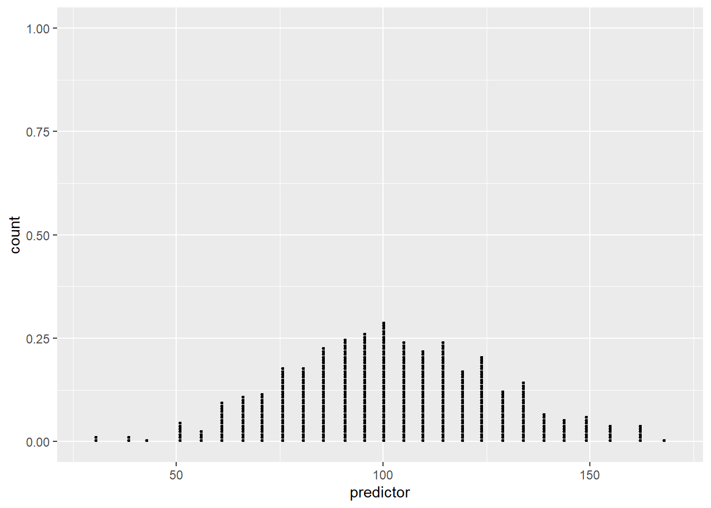
7.1.2 Add Some Options
p1 +
geom_dotplot(dotsize = .15,
fill="red") + # add dotplot geom in red
labs(title ="Dotplot of predictor") # Add title
7.1.3 Different Geoms
7.1.3.1 Histogram
p1 + geom_histogram(fill = "blue",
color="black") + # add histogram geom in blue
labs(title ="Histogram of predictor") # Add title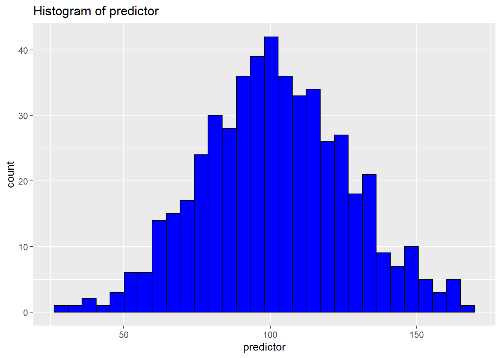
7.1.3.2 Density
p1 + geom_density(fill = "gold") + # add density geom in gold
labs(title ="Density of predictor") # Add title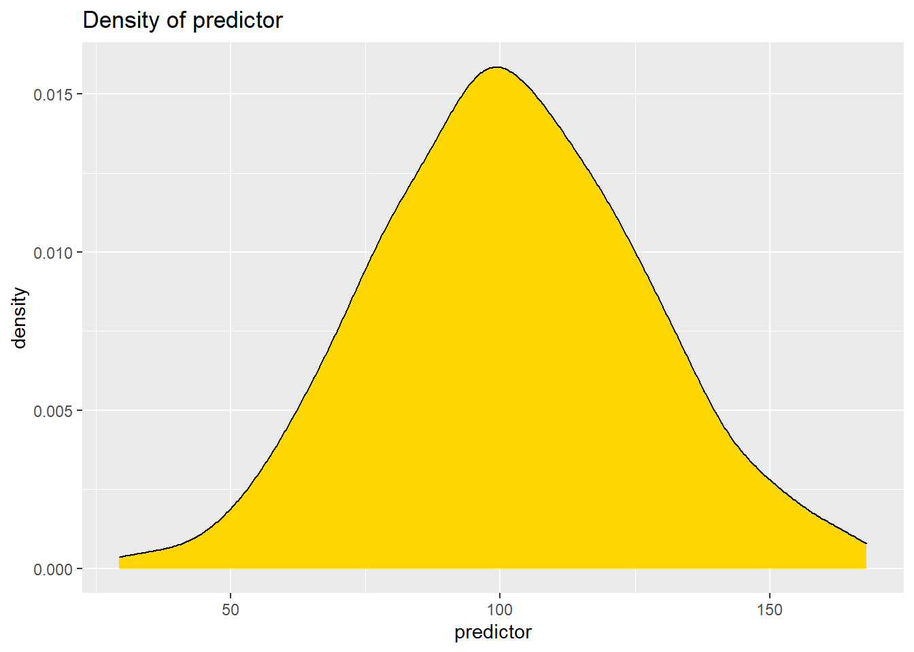
7.1.3.3 Violin Plot
p2 <- ggplot(mydata,
aes(x = 1, # we need an aesthetic with _x_
y = predictor)) # & _y_
p2 + geom_violin(fill = "purple") +
labs(title ="Violin Plot of predictor") # Add title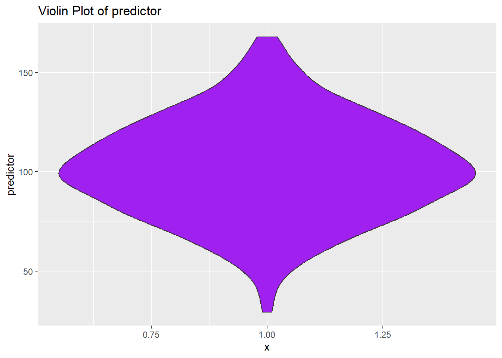
7.1.3.4 Beeswarm
p3 <- ggplot(mydata,
aes(x = predictor, # we need an aesthetic with _x_
y = 1)) # & _y_
p3 + geom_beeswarm(color = "red",
groupOnX = FALSE) +
labs(title = "Beeswarm Plot of predictor") + # Add title
theme(axis.title.y = element_blank(),
axis.text.y = element_blank()) # tweak y axis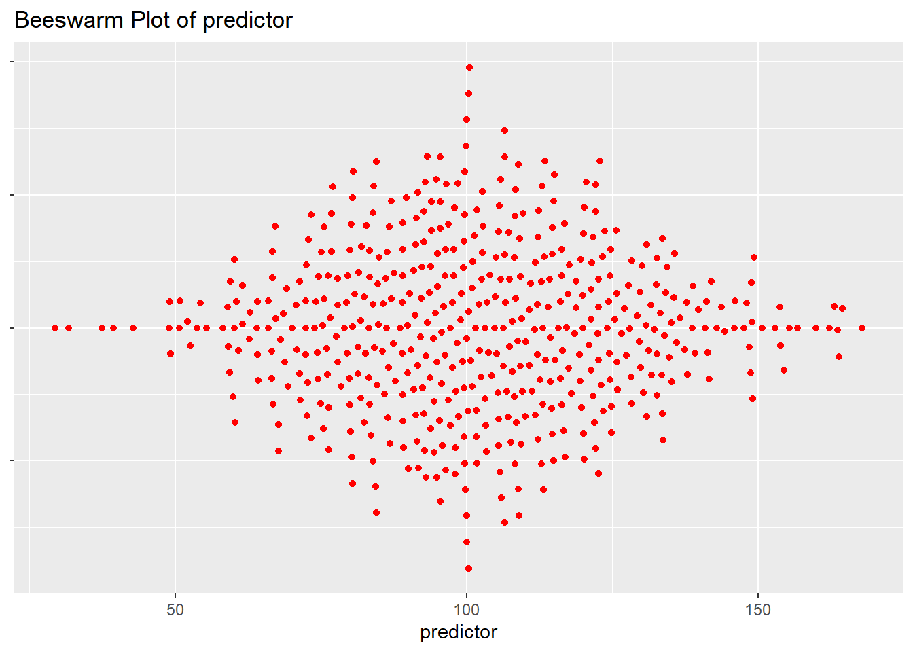
7.2 One Categorical Variable at a Time
The easiest way to represent a single categorical variable is likely a bar graph.
Here bars represent the count of observations in each group.

Changing the aesthetic slightly results in a stacked bar chart. Since all groups are stacked in 1 bar, we have to add information about the colors that we want to use to distinguish the groups.
p_stacked_barchart <- ggplot(mydata,
aes(x = 1,
fill = group)) +
geom_bar() +
scale_fill_manual(values = c("red", "blue"))
p_stacked_barchart
7.3 A Categorical Variable and A Continuous Variable
7.3.1 Barchart
Here bars represent the average value of our outcome variable for members of each group.
p_barchart_of_mean <- ggplot(mydata,
aes(x = group, # slightly different aesthetic
y = outcome)) +
stat_summary(fun.y = mean, # take the mean of the data
fill = "blue", # fill color
geom = "bar") # we want to summarize data with bars
p_barchart_of_mean
7.4 Two Continuous Variables At A Time
7.4.1 Basic Scatterplot
# call ggplot2 where aesthetic uses both predictor and outcome
p4 <- ggplot(mydata,
aes(x = predictor,
y = outcome)) # set up aesthetic
p4 + geom_point() # add point geom (scatterplot)
7.4.2 Add Some Options
p4 + # start with basic plot that has only an aesthetic
geom_point(color = "blue") + # add point geom in blue
labs(title ="Scatterplot of Outcome by Predictor") # add title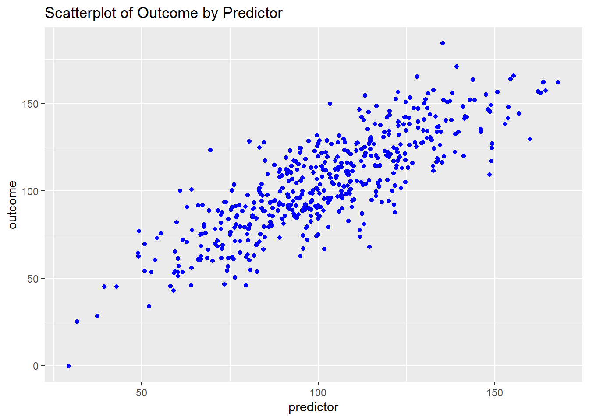
7.4.3 Try A Smoother

7.4.4 Try A Density Plot
7.4.4.1 Simple Density
p4 +
geom_density2d(color = "blue") + # add density geom
labs(title ="Density Plot of Outcome by Predictor") # add title
7.4.4.2 Filled Density
While not strictly necessary, the use of
scale_fill_gradientseems to improve the presentation. You can choose your own colors.
p4 +
stat_density_2d(aes(fill = ..level..),
geom = "polygon") + # add filled density geom
scale_fill_gradient(low = "blue",
high = "red") +
labs(title ="Density Plot of Outcome by Predictor") # add title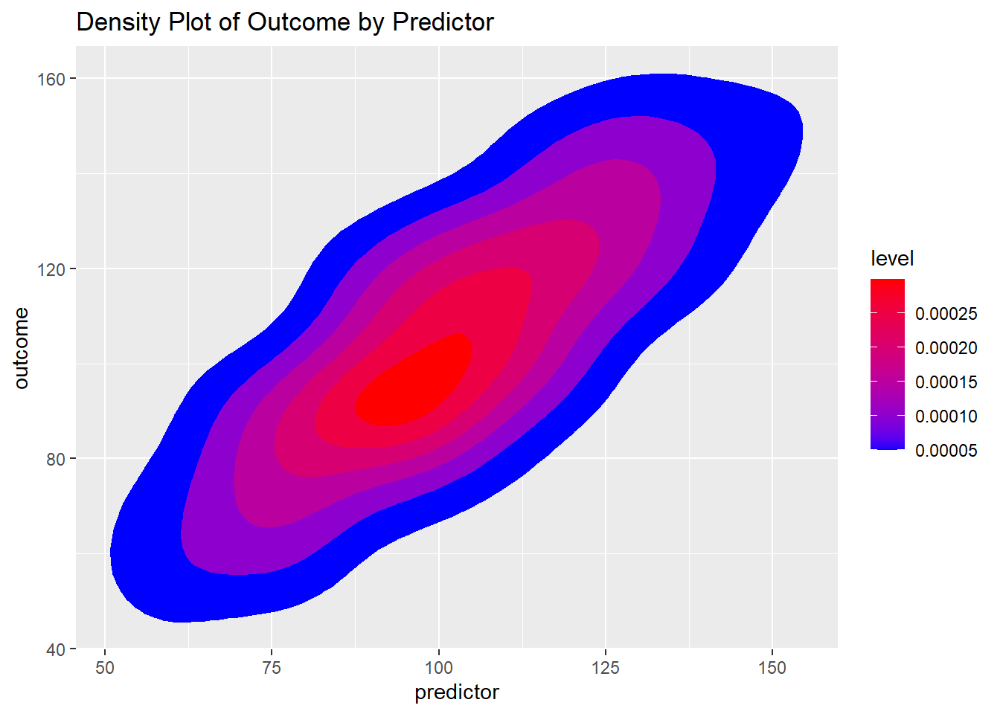

7.4.5 Try a Hexagon Geom
geom_hex may be a useful visualization, especially when there is the possiblity of over-plotting due to many many points.
p4 +
geom_hex() +
scale_fill_gradient(low = "blue",
high = "red") +
labs(title ="Hexagon Plot of Outcome by Predictor") # add title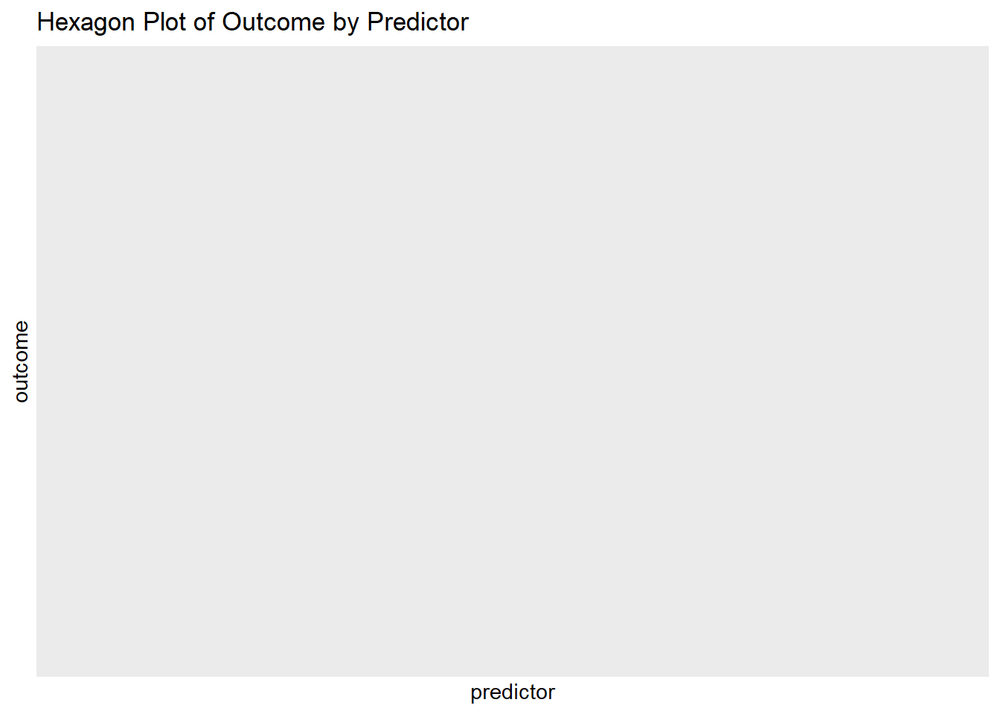
7.4.6 Combine Points and Smoother And Add Some Themes
7.4.6.1 Themes Included With ggplot2


7.4.6.2 Themes requiring ggthemes()
The themes below make use of
library(ggthemes)which you will need to install.
7.4.6.2.1 “538” Theme
p4 +
geom_point() + # point geom
geom_smooth() + # add smooth geom
labs(title ="Scatterplot And Smoother of Outcome \nby Predictor") + # add title
theme_fivethirtyeight() + # "538"-like theme
scale_color_fivethirtyeight() # "538"-like colors
7.4.6.2.2 “Solarized Theme”
p4 +
geom_point() + # point geom
geom_smooth() + # add smooth geom
labs(title ="Scatterplot And Smoother of Outcome \nby Predictor") + # add title
theme_solarized() + # Google Docs theme
scale_colour_solarized() # Google Docs colors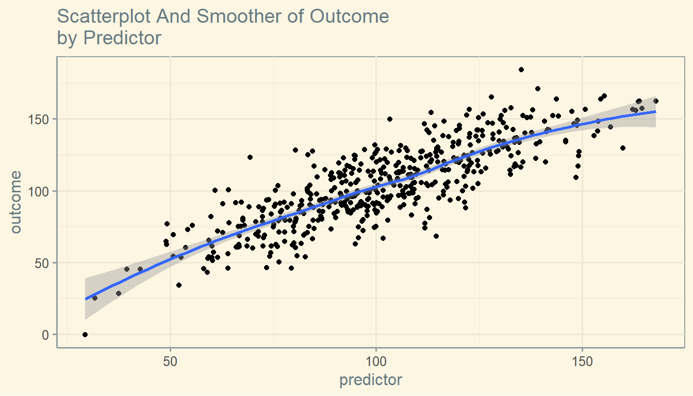
7.4.6.2.3 “Solarized Dark” Theme
p4 +
geom_point() + # point geom
geom_smooth() + # add smooth geom
labs(title ="Scatterplot And Smoother of Outcome \nby Predictor") + # add title
theme_solarized(light = FALSE) + # solarized dark theme
scale_colour_solarized("blue") # solarized dark color palette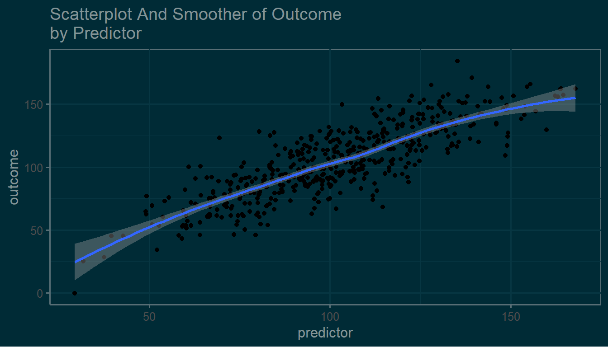
7.4.6.2.4 “Economist” Theme
p4 +
geom_point() + # point geom
geom_smooth() + # add smooth geom
labs(title ="Scatterplot And Smoother of Outcome \nby Predictor") + # add title
theme_economist() + # Economist magazine theme
scale_colour_economist() # Economist magazine colors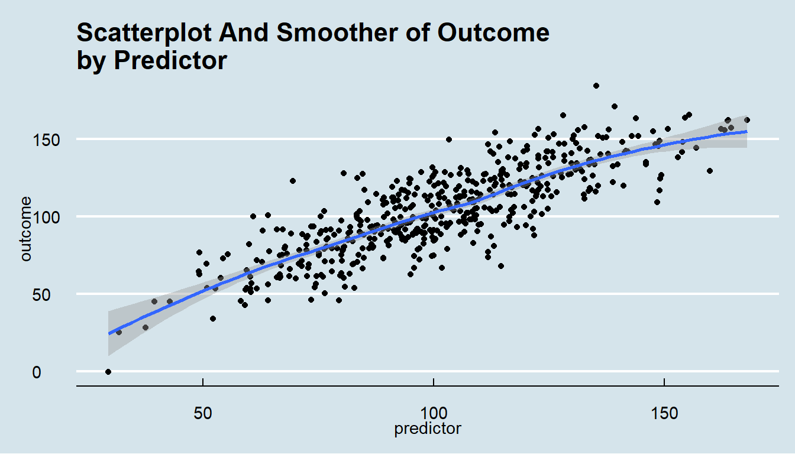
7.5 Two Continous Variables And A Third Categorical Variable
7.5.1 Modify the aesthetic to include group.
p5 <- ggplot(mydata,
aes(x = predictor,
y = outcome,
color = group)) # aesthetic includes color by group
p5 + geom_point() +
geom_smooth() +
theme_economist() +
scale_color_economist() +
labs(title ="Scatterplot And Smoother of Outcome \nby Predictor")
7.5.2 Add facets or “small multiples” by group
p5 +
geom_point() +
geom_smooth() +
facet_wrap(~group) + # facets or "small multiples" by group
theme_economist() +
scale_color_economist() +
labs(title ="Scatterplot And Smoother of Outcome \nby Predictor")